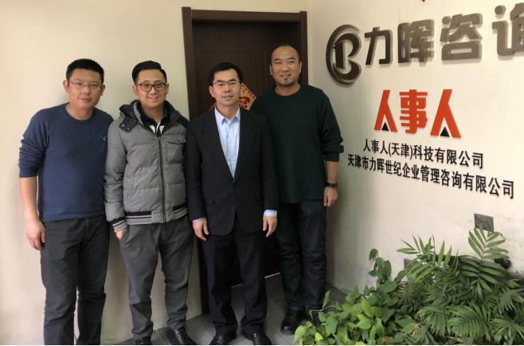

2018年3月7日，天津市南开区副区长苗林栋莅临人事人天津公司进行了工作视察。

3月7日，天津市南开区副区长苗林栋（图右二）等一行人莅临人事人天津子公司，人事人集团CEO王铠（图左二）、董事副总裁兼力晖公司总经理高辉（图右一）、人事人副总裁张一鸣（图左一）进行了热情的接待，就人事人天津公司的发展情况做了具体的阐述，并对未来人事人天津公司发展的规划做了详细的汇报。
苗区长对人事人天津公司的产品及服务进行了聆听，并给予了高度的认可和肯定，同时对于人事人集团今后在天津地区的发展指出重点方向。人事人CEO王铠表示人事人天津公司处于快速发展阶段，很多方面还需要完善以及学习，要不断的提升企业的综合实力，逐渐成为人力资源行业中的佼佼者。对此，苗区长给予了高度认同，表示作为政府会大力支持人事人天津公司的发展。
苗区长等一行的视察工作在愉快的交谈中圆满的结束了。人事人天津公司会在人力资源行业的发展中创造更大的价值！